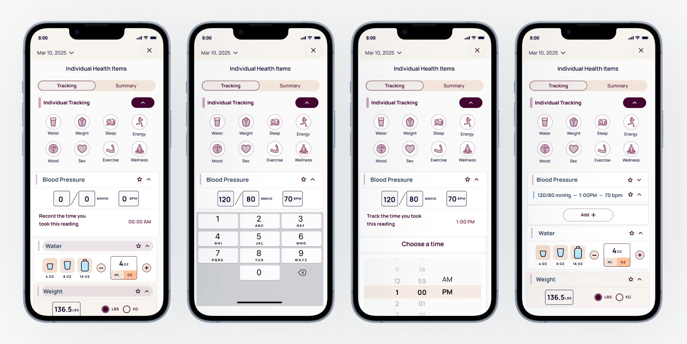
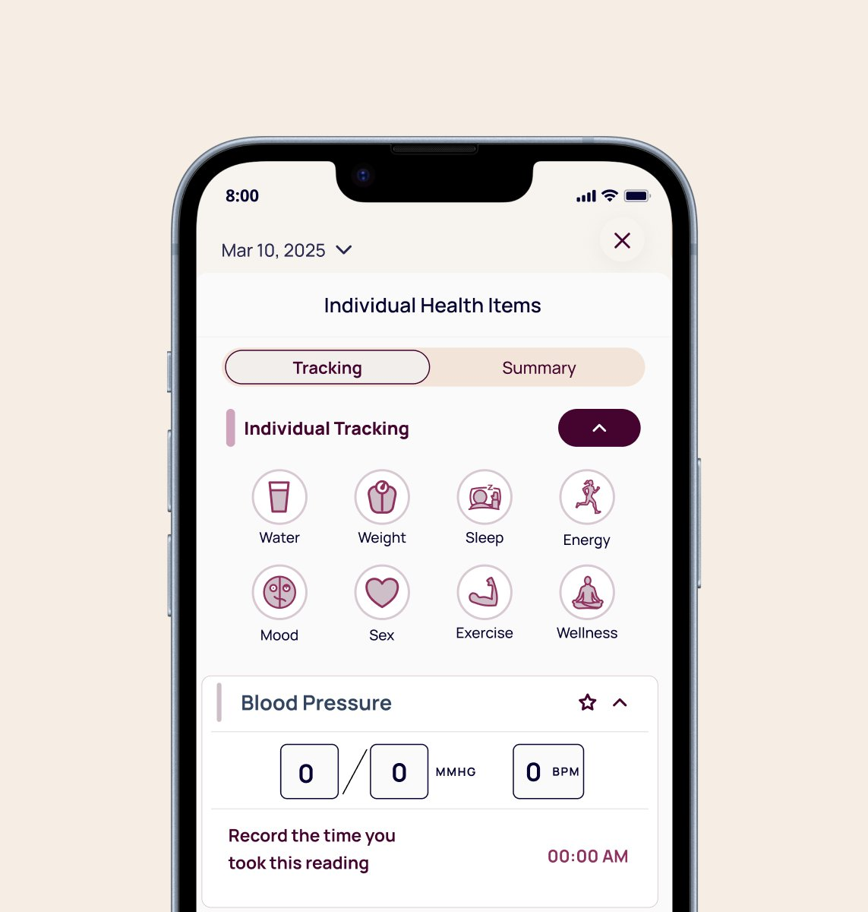
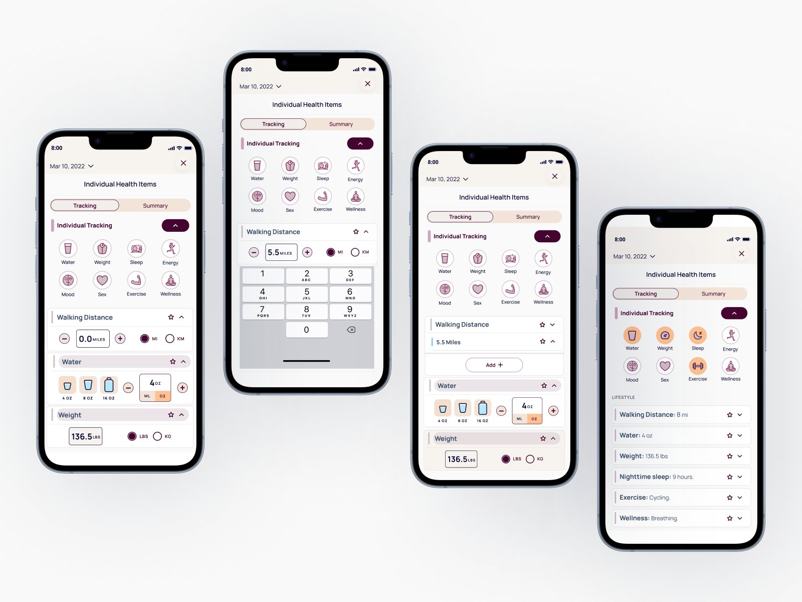
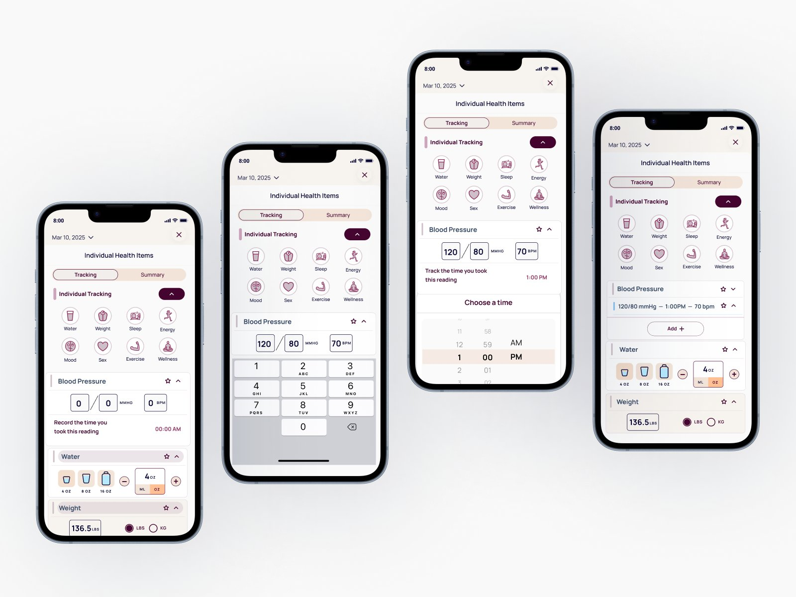

Case Study · 01 · Health Tech
21 pixel-accurate metric designs built to mirror Apple Health and Fitbit conventions exactly, so engineering could integrate without rework and the product team had a scalable framework for every metric that followed.

Fig 01. Blood pressure metric across four states: entry, data input, time selection, and collapsed summary
01
The Challenge
Ourself Health is a wellness app built around longevity and daily habit tracking. Their core product aggregates fitness data from Apple Health and Fitbit into a single interface, giving users a unified view of their health across devices and platforms.
They needed a fitness tracking interface that could work immediately with manual placeholder data and then transition seamlessly to live Apple Health and Fitbit integration when device syncing launched. The constraint was unusual: no original UX patterns, only exact replication of existing platform conventions so that future integration would require zero redesign.
Many health metrics like gait cadence, asymmetry, and cycling speed are device-derived and not intuitive for users to self-report. The UI needed to account for both temporary manual states and eventual automatic syncing without creating two separate design systems.
The constraint wasn't a lack of features. It was designing for a future state that had to feel exactly right when it arrived.
02
Research & Discovery
I conducted a comparative platform audit of Apple Health and Fitbit interfaces, documenting how each metric is measured, aggregated, represented visually, and expected to behave when device data is available. This wasn't just visual research. It required understanding the underlying data logic. I used Claude and ChatGPT throughout to pressure test whether my interpretations matched how these platforms behave.
For example, step cadence in Fitbit is calculated continuously during activity and shown as a daily average in steps per minute, while Flights Climbed is a cumulative daily count. Understanding those distinctions was essential for classifying metrics and defining interface behavior correctly.

Fig 02. Individual tracking screen showing metric categories and blood pressure entry state
03
Design Strategy
Based on the audit, I developed a metric classification model to guide all design decisions. Every metric fell into one of two categories, with clear rules for how each should behave in the interim manual state and at the point of device integration.
Category 01
Metrics like cadence and wheel speed that come directly from sensor data. These appear as static aggregated values when device data is available and as clearly-marked placeholder states in the interim.
Category 02
Metrics like Heart Points or Move Minutes that accumulate over the day and can be represented as numeric totals in the interim, mirroring Fitbit's pattern exactly.
Core principles across both categories: match Apple Health and Fitbit units exactly (steps/min, not steps; bpm, not beats), use a single daily aggregated value per metric rather than raw streams, apply consistent UI components so the system scales, and clearly distinguish between placeholder entry states and read-only device states through microcopy and visual treatment.
04
Design Execution
For each metric I mapped the corresponding Apple Health or Fitbit representation and built designs that precisely matched terminology and units, presentation patterns, and interaction expectations. Each metric included three states: empty entry, active data input, and collapsed summary.
Metric 01
A Google Fit metric that accumulates throughout the day based on activity intensity. Mirrored as a numeric daily total the user can self-report in the interim, using Google's exact unit and threshold language.
Metric 02
Both measured in steps/min or RPM — values that sensors calculate continuously. Displayed as daily averages with a locked entry state and a placeholder label until device data is available.
Metric 03
Apple Health metrics derived from iPhone motion sensors. Among the trickiest to handle: percentages users can't self-report. These got the most deliberate placeholder state — clearly marked as device-only with no entry affordance.

Fig 03. Walking Distance metric: entry, data input, time selection, and collapsed summary

Fig 04. Blood Pressure metric: entry, data input, time selection, and collapsed summary
05
Outcomes
The project delivered two distinct types of value: an immediate design deliverable and a longer-term strategic asset that the product team could use to categorize every metric that came after.
Reflection
This project strengthened my ability to work within tight product constraints while still producing clear, usable designs. When the constraint is exact replication, the craft is in the detail: accuracy of units, consistency of structure, precision of microcopy.
It also reinforced how useful AI can be throughout the design process. Using AI to pressure test logic, validate research interpretations, and refine copy at scale let me move faster while maintaining the accuracy this type of health data demands.
What I'd do differently: I built the classification model mid-project after encountering metrics that didn't fit either category cleanly. If I'd established it in the first week, the research conversations with the product team would have been sharper from the start — we spent time in early check-ins debating edge cases that the framework would have resolved in a single conversation.